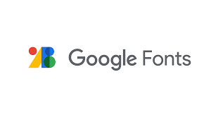

Fuentes Gratuitas para Diseñadores: Mejora tu Tipografía

La tipografía es un elemento fundamental en cualquier diseño. Elegir la fuente correcta puede transmitir la personalidad de tu marca, mejorar la legibilidad y guiar la vista del usuario. Afortunadamente, existen miles de fuentes de alta calidad disponibles de forma gratuita.
Explorando Google Fonts:
Google Fonts es una de las mayores y mejores colecciones de fuentes web gratuitas. Son fáciles de usar e ideales para proyectos personales y comerciales. Aquí te presentamos algunas de nuestras favoritas y su posible uso:
1. Montserrat
Montserrat: Diseño Urbano y Moderno
Ideal para encabezados y textos destacados. Transmite una sensación de modernidad y geometría.
Ver en Google Fonts2. Open Sans
Open Sans: Legibilidad y Versatilidad
Perfecta para cuerpos de texto largos. Es una fuente sans-serif limpia y amigable que se lee muy bien en pantalla.
Ver en Google Fonts3. Roboto
Roboto: Clara y Robotica con un Toque Natural
Otra excelente opción para textos y encabezados. Es la fuente predeterminada en Android y ofrece una gran legibilidad.
Ver en Google Fonts4. Playfair Display
Playfair Display: Elegancia y Estilo
Una fuente serif clásica y sofisticada, ideal para títulos y elementos de diseño que buscan un toque de elegancia.
Ver en Google FontsRecuerda que para usar estas fuentes en tu proyecto, debes vincularlas desde Google Fonts en la sección `
` de tu HTML y luego aplicarlas con la propiedad `font-family` en tu CSS. ¡Experimenta y encuentra la combinación perfecta para tu diseño!